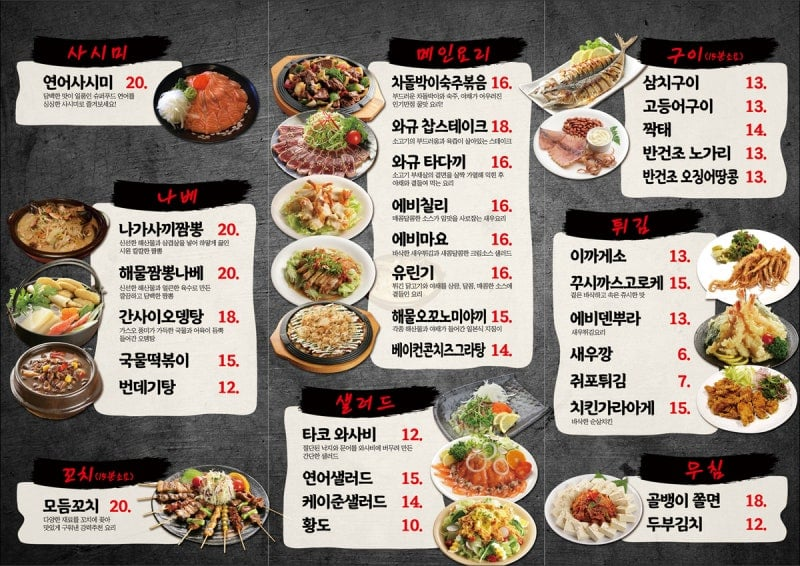
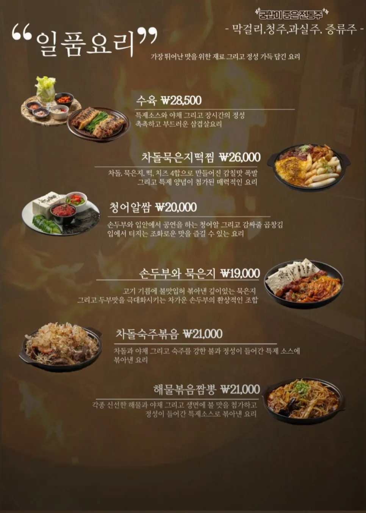
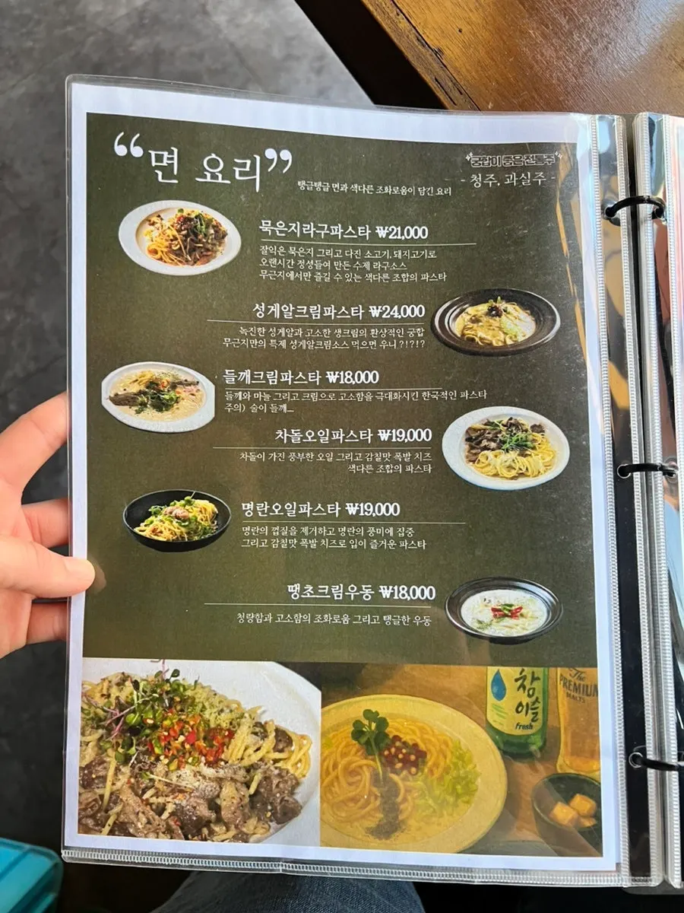
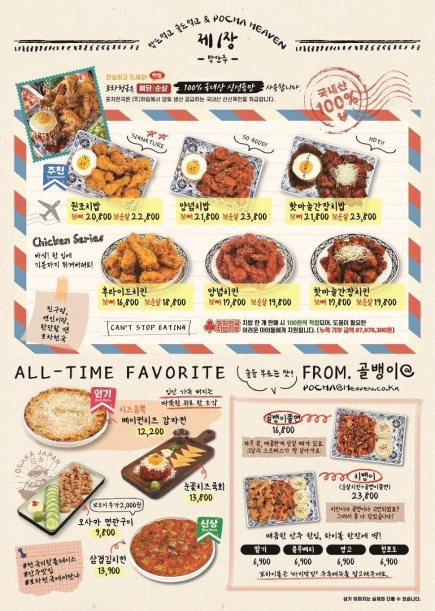
한국
대다수의 많은 술집이
혼술 가능한 술집이라도 일단 메뉴 하나하나의 가격이 비쌈
2~3인 와서 먹을걸 설정해서 양도 많은데 가격도 쎄다보니 혼술해서 시키기가 매우 부담스러움
메뉴 하나 시키면 그 메뉴만 계속 먹어야 함
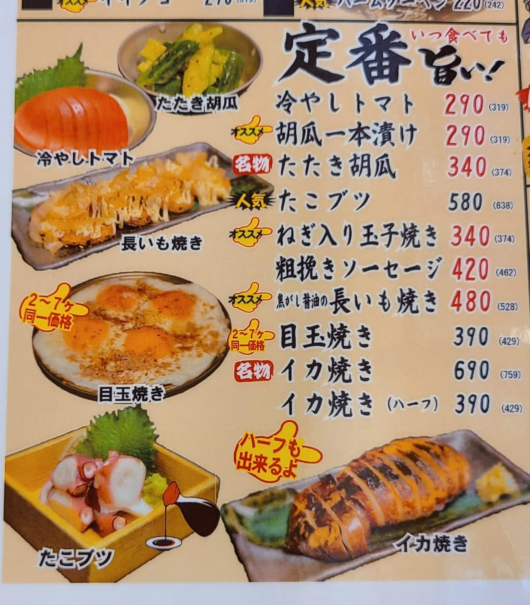
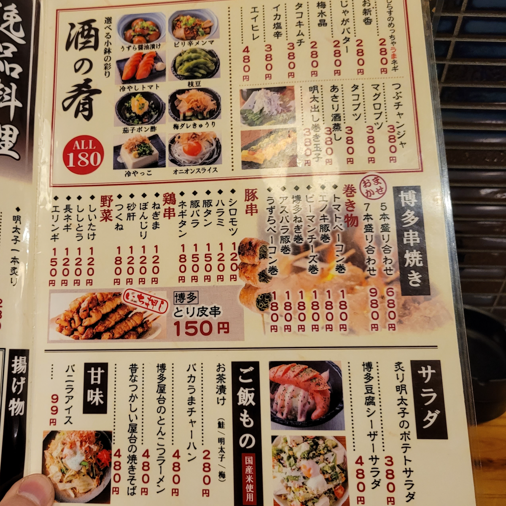
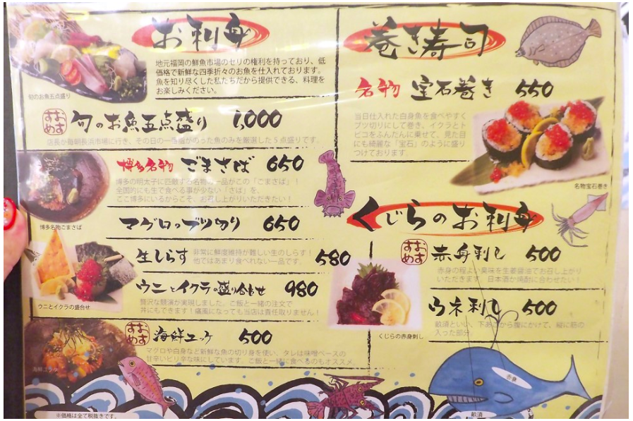
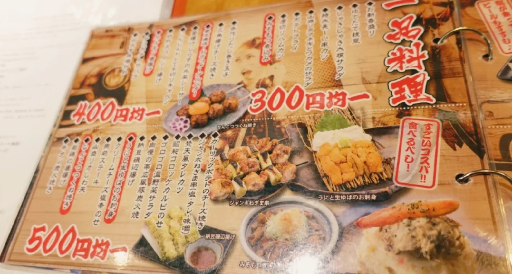
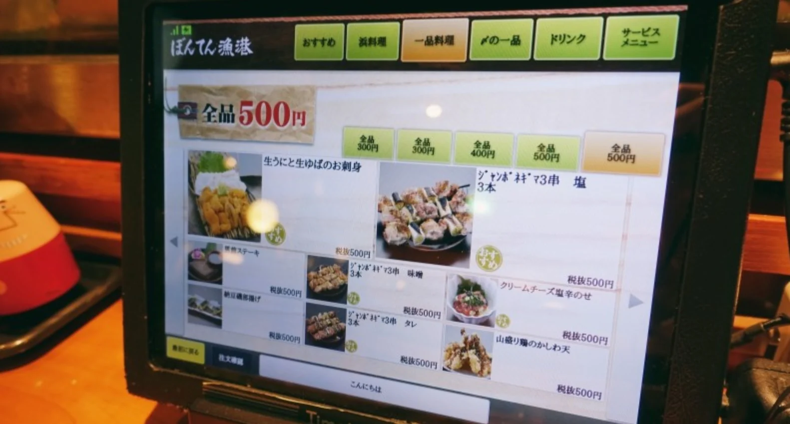
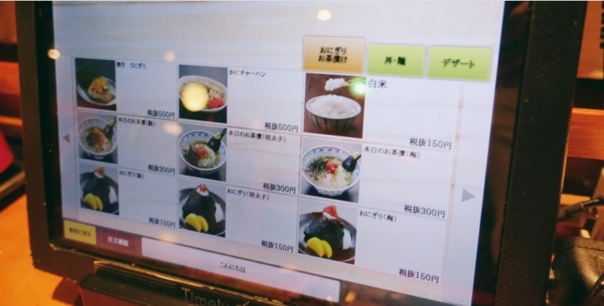
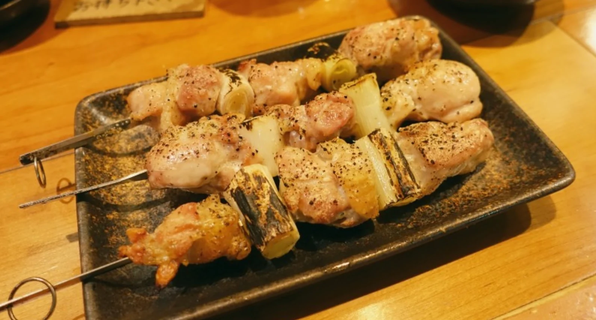
500엔
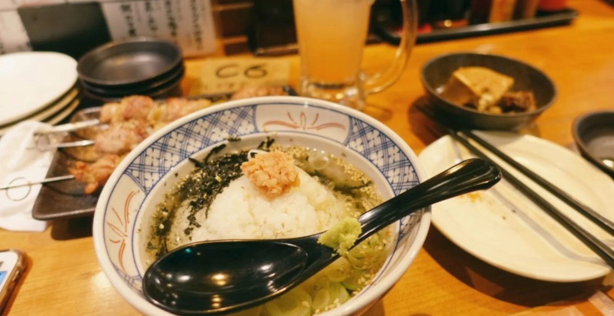
300엔
일본
혼자 와서 먹을걸 고려한 메뉴구성을 한 술집들이 많음
메뉴 하나하나의 가격이 저렴해서 혼자가 여러개 시키기 부담스럽지 않음
물론 양은 그 가격에 맞게 조금 나오지만
대신 저렴한 금액으로 여러 메뉴 시켜서 혼술하기 최적화됨
결론
한국 : 메뉴의 양과 가격이 다수의 인원이 와서 술을 먹는다는것에 최적화됨
일본 : 메뉴의 양과 가격이 혼자 와서 술을 먹는다는것에 최적화됨
한국은 밖에서 혼자 술마시면 궁상이라는 이미지가 있어서 그런가..